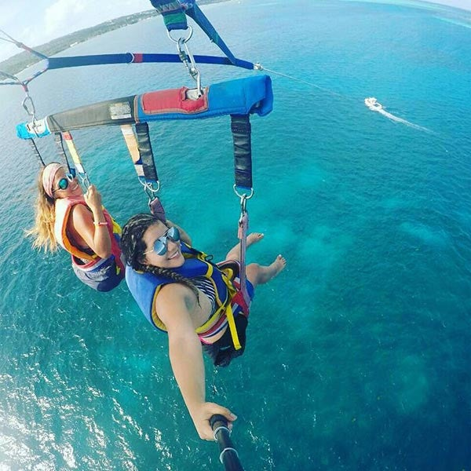

San Andres ¡Un autentico Paraiso!
 Cerca de cuarenta sitios para bucear, unas de las mejores playas del Caribe, un mar azul pero que tambien es verde y de tonos lila, y gente llena de amabilidad… esos son algunos de los encantos de las islas de San Andrés, Providencia y Santa Catalina, ubicadas en el Caribe colombiano
El Archipielago, ubicado a unos 230 kilometros al este de Centroamérica y a unos 750 kilómetros al norte del territorio continental colombiano, fue declarado en el año 2000 Reserva Mundial de la Biosfera “Seaflower”. Esta reserva no solo incluye las islas y sus cayos lejanos; además, conforma el 10% del mar Caribe, con una extensión mayor a los 300 mil kilómetros cuadrados
A estas islas paradisíacas llegan viajeros de todo el mundo en busca de atardeceres perfectos, playas de arena blanca y altas palmeras que se mueven con la brisa y que, combinadas con las sonrisas despreocupadas de sus habitantes, convierten a este destino en uno de los mejores lugares para pasar unas vacaciones tropicales
En este pequeño paraíso las influencias de ingleses, españoles, piratas y corsarios se mezclaron con el pueblo afro para dar como resultado una cultura de mucha riqueza.